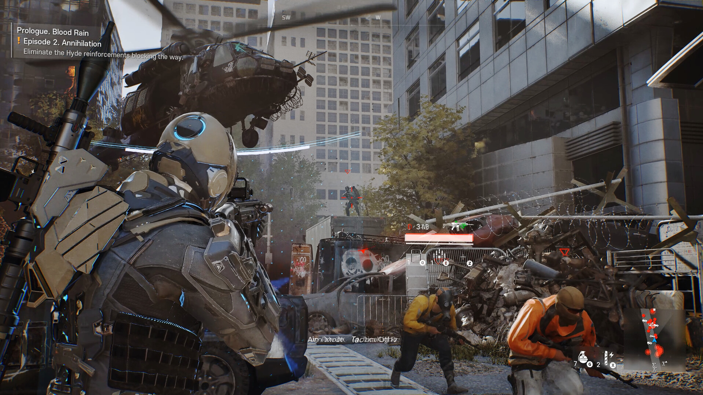
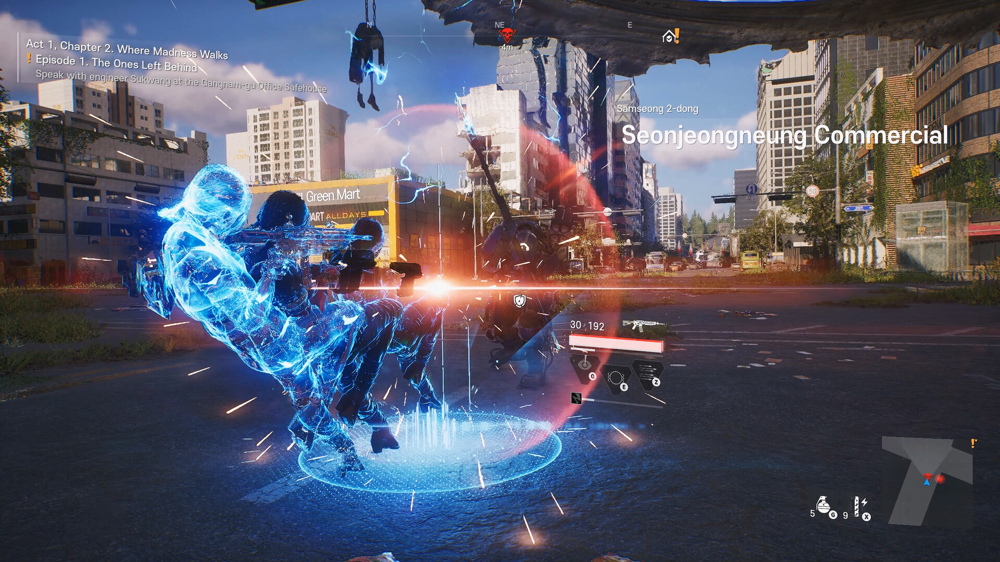
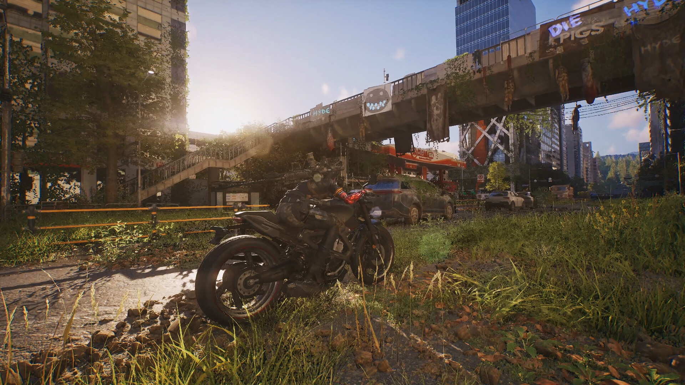
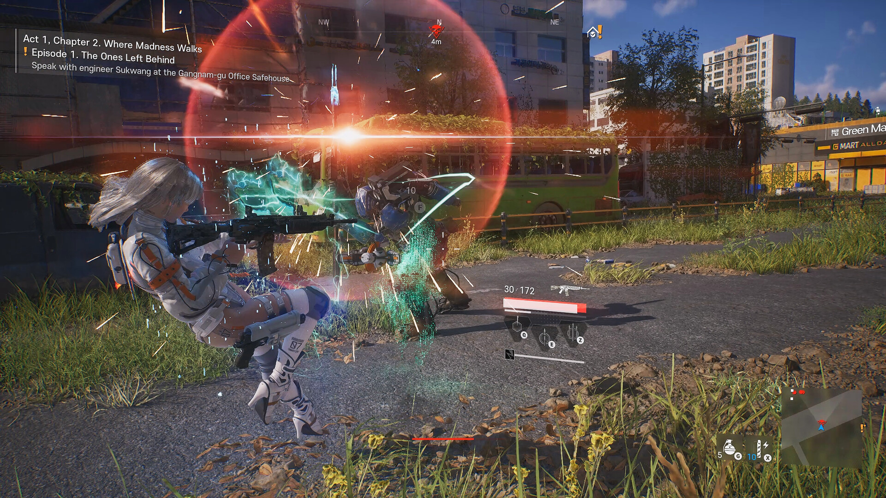

신더시티 알파테스트 신청 방법, 스팀 참가 신청 12월 1일 마감 (테스트 12/4~12/6)
코엑스랑 봉은사가 폐허가 된 서울 안에 그대로 나온다니, 지명만 봐도 어디인지 알아볼 것 같은 슈터죠(?). 엔씨가 퍼블리싱하는 신더시티(CINDER CITY) 이야기인데요, 글로벌 알파테스트 참가자를 모집하고 있어서 신청 방법부터 먼저 짚어 드릴게요. 한국에서도 바로 신청할 수 있더라고요.
스팀 스토어 소개 이미지, 타이틀 로고와 주인공 클로즈업
이미지 출처: 스팀 상점 페이지 / NC·BIG FIRE GAMES (CINDER CITY 스토어 페이지)
핵심부터 말씀드리면 한국은 스팀에서 신청하고, 신청 기간은 11월 12일(목) 23:00 ~ 12월 1일(화) 17:00 KST, 만 18세 이상이어야 합니다. 테스트 자체는 12월 4일~6일(공식 PST 표기)에 열려요.
1. 게임 특징
신더시티는 빅파이어게임즈가 개발하고 엔씨가 퍼블리싱하는, 몰락한 근미래 서울을 배경으로 한 오픈월드 시네마틱 3인칭 슈터입니다.
- 시네마틱 슈터 : 영상미와 몰입감을 앞세운 3인칭 슈팅이에요.
- 거대한 오픈월드 : 파괴된 서울이 무대입니다.
- 대규모 멀티 플레이 PvE : 다수의 플레이어가 상황에 따라 협력하고 도전하는 구조예요.

스팀 스토어 소개 이미지, 폐허 도심의 교전 장면
이미지 출처: 스팀 상점 페이지 / NC·BIG FIRE GAMES (CINDER CITY 스토어 페이지)
그래픽 쪽은 엔비디아와 지난 2년간 제휴해 게임스컴 같은 행사에서 공동 마케팅을 해 왔다고 하니, 화면 품질에 신경을 많이 쓰는 게임이라는 건 분명해 보이죠.
스토어 소개글을 보면 플레이어는 '신더나이츠'가 되어 하이드 그룹, 변이체, 적대 세력과 맞서요. 디스이즈게임이 전한 엔씨 자료로는 주인공 '세븐'이 딸 '조이'를 구하려고 미션을 수행하는 캐릭터 서사 중심 구성이라고 합니다.

스팀 스토어 소개 이미지, 선정릉 상업지구 거리
이미지 출처: 스팀 상점 페이지 / NC·BIG FIRE GAMES (CINDER CITY 스토어 페이지)
보시면 화면 속에 'Seonjeongneung Commercial'이라는 구역 이름이 보이는데요, 코엑스·봉은사 같은 서울의 실제 랜드마크를 정밀하게 구현했다고 하니 이런 지명 컷이 괜히 눈길을 끌더라고요. 이번 알파에서 넓어지는 쪽이 역삼·선정릉·논현 일대입니다.
| 항목 | 이번 알파 내용 |
|---|---|
| 오픈월드 | 탐험 맵이 1.2×1.2km에서 2.4×2.4km로 확대, 사이드 미션 3배 이상 |
| 스쿼드 던전 | 최대 4인 파티, 스쿼드 던전 3종(프리알파 선릉 하수 통제소 + 신규 역삼 그랜드 빌딩·챔버 제로) |
| 스토리 | 확장된 에픽 미션, 챕터3 진입, 던전 안 신규 세이브 포인트 |
| 피드백 반영 | 8월 프리알파 피드백 약 3,000건 검토, 탄약 드랍 평균 30% 이상 상승 |
게임동아 11/16 · 인벤 글로벌 보도(엔씨 자료) 기준
8월 프리알파 때 받은 의견은 가이드 미션(탄약·총기 수리·장비 제작) 추가, 프롤로그 난이도 곡선 완화, 어깨 전환과 슬라이드, 근접 전투 손질 쪽으로 반영됐다고 해요. 주인장은 개인적으로 던전 안에 세이브 포인트가 생긴다는 쪽이 제일 반갑더라고요. 4인 파티로 던전을 돌다가 중간에 끊기면 허탈한데, 이어서 할 수 있다는 얘기니까요.
이동과 전투 쪽도 볼거리가 많아요. 오픈월드 전역에 바이크, 파워 로더, 항공기 같은 탈것이 배치돼 있어요.

스팀 스토어 소개 이미지, 폐도로 위의 바이크와 HYDE 낙서
이미지 출처: 스팀 상점 페이지 / NC·BIG FIRE GAMES (CINDER CITY 스토어 페이지)
전투에는 드론과 은신처럼 역할이 다른 택티컬 기어도 쓰입니다.

스팀 스토어 소개 이미지, 방어막과 드론이 함께 나오는 전투 장면
이미지 출처: 스팀 상점 페이지 / NC·BIG FIRE GAMES (CINDER CITY 스토어 페이지)
혼자 도전하거나 팀을 꾸려 도전하는 구조이고, 한국어 음성도 지원한다고 적혀 있어요. 스팀에는 출시일이 '출시 예정'으로만 적혀 있고 확정 출시일은 공개되지 않았어요. 스토어 영상에는 'ALPHA TEST PREVIEW (SUB) | DEV TALK'라는 알파테스트 프리뷰 영상도 올라와 있으니, 화면이 궁금하시면 신청 전에 한 번 보고 가셔도 좋아요.
2. 스팀 페이지 알파테스트 참가 방법
8월 프리알파 때 스팀 공지를 보면 프리알파는 미국에 사는 만 16세 이상만 FirstLook으로 신청할 수 있었는데, 이번에는 한국·대만·일본이 스팀으로 열렸어요.
한국에서는 스팀에 로그인한 상태로 신더시티 스토어 페이지의 'CINDER CITY Playtest 참가' 칸에서 '참가 신청'을 누르고, 확인 창에서 한 번 더 '참가 신청'을 누르면 신청이 끝납니다.
| 구분 | 일정 (스팀 공식 공지 · 게임동아 11/16 보도 기준) |
|---|---|
| 신청 기간 | 11/12(목) 23:00 ~ 12/1(화) 17:00 KST (PST 11/12 06:00 ~ 11/30 종료) |
| 알파테스트 | 12/4 ~ 12/6 (공식이 PST로만 발표, 한국 시간은 추후 공지) |
신청 기간 표기가 조금 헷갈릴 수 있는데요, 스팀 공지는 PST로 11월 12일~11월 30일이라고 적었고 한국 시각으로 바꾸면 12월 1일 17:00까지입니다.
시차가 17시간이라 날짜가 하루 밀려 보이는 거예요. 공지 제목에는 '클로즈 알파 테스트'라고 나오는데 같은 행사예요.
신청 순서는 아래 다섯 단계예요. 화면에 뜨는 문구를 그대로 적어 봤는데요, 보시면서 따라 하시면 됩니다.
| 단계 | 할 일 | 화면 문구 |
|---|---|---|
| 1 | 스팀에 로그인 | 로그아웃 상태면 '로그인하세요.' 안내 후 로그인 페이지로 넘어가요 |
| 2 | 스토어 페이지 열기 | store.steampowered.com/app/4651830 |
| 3 | '참가 신청' 버튼 누르기 | 'CINDER CITY Playtest 참가' 칸 안에 있어요 |
| 4 | 확인 창에서 한 번 더 누르기 | '참가 신청' 또는 '취소' |
| 5 | 완료 문구 확인 | '참가 신청 완료' |
3번 칸에는 '참가 신청을 하면 개발자가 참가자를 더 많은 플레이어에게 참가 권한을 부여할 준비가 되었을 때 알림을 받게 됩니다'라는 안내가 붙어 있고, 개발자 쪽 준비가 되면 이메일이 와요.
접수는 12월 1일(화) 17:00 KST까지만 받으니 로그인부터 미리 해 두시면 편해요. 신청 전에 확인할 조건은 이 세 가지입니다.
- 만 18세 이상
- 대상 지역 거주 : 한국·대만·일본은 스팀 신청이에요. 미국·캐나다·독일·영국·프랑스는 FirstLook으로 따로 받는 지역이라 한국 독자분은 해당 없습니다.
- PC(스팀)
그리고 이 알파는 NDA가 걸려 있어요. 플레이 녹화와 스크린샷, 라이브 방송, 영상·이미지 업로드, 테스트 내용을 공개 게시하는 건 전부 금지고, 어기면 참가 자격을 박탈당할 수 있습니다. 그래서 이 블로그에도 알파 화면은 못 올려요. 위에 보여드린 사진은 전부 스토어에 올라온 소개 이미지입니다.
참고로 개발 중인 빌드라 버그나 성능 문제, 서버 불안정이 있을 수 있고, 일정과 콘텐츠가 바뀌거나 긴급 점검이 들어갈 수도 있다고 공지돼 있으니 참고하세요.
PC 사양은 스토어 페이지 기준이에요. 눈에 띄는 건 최소와 권장 모두 메모리 32GB라는 점인데, 꽤 부담스럽네요. 신청 전에 작업 관리자에서 내 PC 메모리 용량부터 한 번 확인해 보세요. 그래픽카드도 최소가 RTX 2060이라 꽤 높은 편입니다.
| 항목 | 최소 | 권장 |
|---|---|---|
| 프로세서 | Intel Core i5-10400 또는 AMD Ryzen 5 3600 | Intel Core i7-12700 또는 AMD Ryzen 7 7800X3D |
| 메모리 | 32GB | 32GB |
| 그래픽 | NVIDIA GeForce RTX 2060 | NVIDIA GeForce RTX 4070 |
스팀 스토어 표기 기준이며 알파 빌드 사양과 같은지는 공지에 없어요. 최소 사양의 운영체제는 Windows 10/11 64비트, DirectX 12입니다.
자주 묻는 질문
Q. 신청하면 바로 접속할 수 있나요?
A. '참가 신청 완료'는 접수 단계예요. 선정된 분에게는 이메일로 개별 통보가 가고, 설치와 접속 안내는 테스트 시작 전에 공식 채널로 공유됩니다.
Q. 12/4~6 한국 운영 시간은 언제인가요?
A. 공식은 지역별 테스트 시간을 추후 공지한다고만 밝혔어요. 한국 기준 시간은 공지가 나오면 스팀 공식 공지와 NC 공식 채널에서 확인하시면 됩니다.
여기까지가 신더시티 글로벌 알파테스트 신청 방법이었습니다. 한국은 스팀 스토어 페이지에서 '참가 신청'을 두 번 누르면 되고, 마감은 12월 1일(화) 17:00 KST예요. 게임은 몰락한 근미래 서울을 배경으로 한 오픈월드 시네마틱 3인칭 슈터입니다. 그럼, 다음 포스팅으로 찾아올게요!
참고한 곳 (2026.11.18 기준)
· 스팀 공식 공지 CINDER CITY 클로즈 알파 테스트 참가자 모집 안내
· 스팀 스토어 CINDER CITY
· 스팀 공식 공지 CINDER CITY 프리알파 테스트 안내(8월)
· 게임동아 신더시티 글로벌 알파테스트 기사
· 인벤 글로벌 신더시티 알파 기사
· 디스이즈게임 신더시티 기사